技术有没有用，和今天的价格是否合理，是两件事
18个板块的独立分析指向同一个结论：AI技术革命是真的，但围绕它建起的金融结构正在脱钩。
更新至2026年8月 · 内部研究 · 结论基于持续研究，会随新证据更新
1AI硬件泡沫走到了第几步？
- 对象钉死在硬件层。按靳卫萍12步，形成(1-4)和膨胀(5-8)已走完，当前破裂阶段第10-11步。
- 博傻逻辑崩塌、杠杆平仓正在发生；抄底者制造短暂反弹反复出现。
- CAPEX自噬循环：维持硬件高估值必须继续加码开支，但开支的钱正在被同时抽干。
ChatGPT两个月破1亿用户——人类历史最快的消费级技术采用。NVIDIA数据中心业务同比增长超100%。四大云厂AI相关收入年增速30-40%。
真实的技术进步恰恰是泡沫能形成的前提条件——每次大泡沫都始于真实的创新。
NVIDIA市值两年从$3000亿涨到$3万亿+。Mag 7占S&P 500近40%权重。AI概念股市销率远超2000年互联网泡沫同期。
涨幅不等于泡沫，但涨速、集中度、估值脱离三者同时出现时，历史上每次都是泡沫信号。
四大厂年度CAPEX合计$7,300亿+。Alphabet 12个月举债超$850亿。Google/Meta/Oracle合计掀起万亿美元级借债潮，包括百年期债。
每$1 AI收入背后堆了$5-7的基建支出。手握千亿现金还要借——AI基建烧钱速度连现金牛都跟不上。
CoreWeave全成本覆盖比仅0.87x——收入覆盖不了成本，仍获投资级评级并成功IPO。GPU被当"资产"做抵押品，折旧假设6年——但技术迭代3年就淘汰。
定价逻辑从"这台GPU能赚多少钱"变成"总有下家出更高价"——这就是博傻的定义。
软银$1000亿Stargate项目。黑石、KKR大举进入AI数据中心。沙特/阿布扎比主权基金设立AI专项。养老金基金配置AI基础设施。SpaceX IPO吸引$750亿资金。
这些是投资世界里"最后才动的钱"。历史上每次泡沫，最保守的资本入场后不久就见顶。
AI基建支出与AI收入比达5-7倍。Sequoia测算收入缺口从$2000亿扩至$6000亿+。分析师从Forward 2年→Forward 3年利润估值，不断换方法合理化高估值（PE→市价/账上余钱→市价/营收→PEG）。
当市场选择性忽略"花了多少vs赚了多少"这个最基本的问题时，泡沫膨胀阶段的标志就齐了。
2026年IPO总额预计$2,250亿，是2025年$680亿的3倍以上。SpaceX+OpenAI+Anthropic同期启动上市。Google增发$850亿股票。四大云厂从股票回购方（注入流动性）变成增发方（抽走流动性）。
一个月内三家巨头同时启动IPO、大厂万亿级举债——当企业忙着融资而非产生回报时，说明连内部人都觉得当前估值高于真实价值。
H100二手价已腰斩。AI板块个股分化加剧，普涨格局已结束。三条触发路径同时积累压力：A.技术路线攻击（DeepSeek）；B.信用收缩（美债>2007高点，日债>1996高点，套息交易承压）；C.需求验证失败（收入斜率再次放缓）。
连续17天只涨不跌后急转——从膨胀到破裂的关键转折已经发生。
反身性逆转：CAPEX上修从被奖励→被惩罚。财报达预期等于miss预期。Anthropic收入斜率再次放缓，$1,200亿ARR vs $7,300亿CAPEX的叙事再次无法闭环。
衔尾蛇形成：CAPEX养活了AI公司收入，但同时抽干了云厂自己的现金流。2025年账上还剩$2,550亿余钱→2026年几乎花光。玩家预判资金供需逆转，率先离场→预期自我实现。
场内从跌30%才强平→跌20%→跌10%就大量杠杆破裂。很多杠杆资金"30万本金+70万消费贷"凑成100万入场——等不到强平线就必须自己平仓。GPU涌入二手市场→抵押品蒸发→融资结构崩塌。
好消息被当坏消息解读。坏消息被放大。越跌越跌的下行自我加强循环正在积累。Fisher 2000年观察到同样的模式：激进杠杆先破裂→基金赎回潮→大盘股也被迫卖出。
每次反弹都是"信了的人"试图证明自己没错。但预期已从"AI一定行"变成"谁先跑谁活"。真正伤人的不是账面亏损，是基于巅峰预期做出的真实承诺——房贷、学费、长约——同时变成负担。
Fisher 2002年经验：他预判6月见底，实际10月才见底——低估了安然/世通造假引发的情绪自我加强螺旋。精准判断拐点极难，大师也一样。熊市通常持续1-18个月，极少超过2年。
技术进步是真的，但围绕技术建起的金融杠杆和过度预期会被清除。回归不是回到泡沫前，是在更低的预期基线上重新建设。
互联网泡沫破裂没有杀死互联网，但杀死了围绕互联网建起的金融幻觉。AI大概率也是如此——这正是板块9"危机即机会"的前提。
A股里被叫作AI的，主力是光模块、服务器、芯片这些硬件主题。科创板整体估值（2026年预计利润计算）约80-100倍PE，接近甚至超过2015年6月创业板历史泡沫阶段水平。估值锚已从"盈利"转向"远期想象"——2015年是"互联网改变世界"，今天是"AI基建改变一切"。
A股AI主题基金规模达5,668亿元（178只产品），2025年70+只基金净值翻倍，永赢科技智选A以233%年回报创纪录——基金经理焦巍直言"AI具有显著的宏大叙事和泡沫色彩"。
来源：东方财富、证券时报、新华网 · 2025-2026
2大师们怎么判断泡沫顶部？
- Fisher五指标4/5已触发：资金供需逆转、利率倒挂、市值极端集中、估值方法持续更换。
- Fisher本人从"肯定不是泡沫"(2025.11)转向"早期狂热已现"(2026.5)——半年内自我修正。
- 收入斜率是市场续命的关键变量：增速惊人，但对比$7,300亿CAPEX叙事仍远未闭环。
“Stock prices have reached what looks like a permanently high plateau.”
直译：股价已经走到一个高位平台，而且这个高位看起来会永久停在那里。
他不是在喊顶。英文里 plateau 是平顶高原：涨到这里站住了，成为新常态，不会掉回去。两周后DJIA开崩，后来一共跌去89%。Fisher本人损失约$800万-$1,000万（今约$1.4亿），至死没赚回来。
他的分析框架并不愚蠢——企业盈利增长、生产率提升、新技术采用——在1929年都是事实。他犯的错误是：用正确的事实推出了「高价会永久站住」，框架里没有估值已经偏离基本面多远。
来源：纽约时报 1929-10-16, 传记 Irving Fisher: Making of a Crank
"AI at this point, for sure, is not a bubble."
"A real bubble sees no fear because the world has now changed in some whole new way... It is the epitome of having climbed the wall of worry fully into extensive euphoria."
"Most of the money going into AI is from companies that are making money and paying for it out of their cash flow, not based on selling stock."
"There are beginning signs of euphoria in the market."
"The burst of price appreciation after the Cerebras IPO is symbolic of what you get as you move from the periods of optimism into the early periods of euphoria."
科创板当前PE 80-100x，而2015年6月创业板泡沫顶峰PE约100-150x。但参与主体已从散户+杠杆升级为更广泛的机构参与。
关键差异：2015年创业板泡沫的膨胀以散户为主导，数月内翻倍。当前AI泡沫的参与者包括公募、险资、产业资本——泡沫结构更复杂，但破裂时传导也更广。
来源：东方财富、中金研报 · 2025-2026
3AI的钱流向了哪里？——从硅谷豪宅到海力士工装相亲
- 顶层：AI创始人/高管将纸面财富变现为硬资产（豪宅），是经典的周期高位信号。
- 中间层：财富沿供应链向下渗透——海力士工人人均奖金280万成相亲"顶流"，合肥长鑫周边楼盘上千套被员工买走。整条链上1500-2000万人的房贷、车贷、消费都建立在CAPEX持续流入的假设上。
- 底层逻辑：上行时1美元CAPEX创造2-3美元GDP；断流时同样的乘数反向运转——沿岸所有生态同时枯萎。渗透越深，反转冲击面越广。
泡沫不是骗局——它比骗局更危险，因为底下有真东西。每一次技术泡沫都遵循同一条因果链：真实的技术 → 真实的早期回报 → 过度的资本涌入 → 财富沿供应链渗透 → 渗透变成依赖 → 现实施加上限 → 链条断裂，所有人同时落水。
先看这条链条如何运转，然后在后面三个Tab里对照当前的事实。
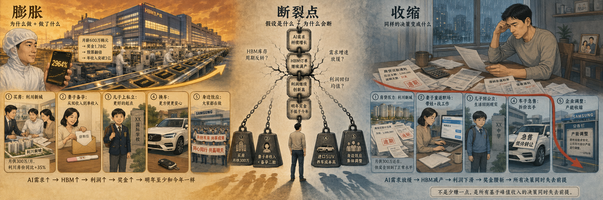
研究站的预测 vs 正在发生的事实
我们在研究站Q2板块推导出这条六层因果链时，第3层（财富渗透）和第4层（预期嵌入）还是逻辑推演。现在它们正在成为现实——海力士工人靠奖金成为韩国相亲顶流，合肥长鑫员工买走千套楼盘，龙仁房价一个季度涨118%。后面三个Tab展示的就是这条链上正在发生的现场证据。
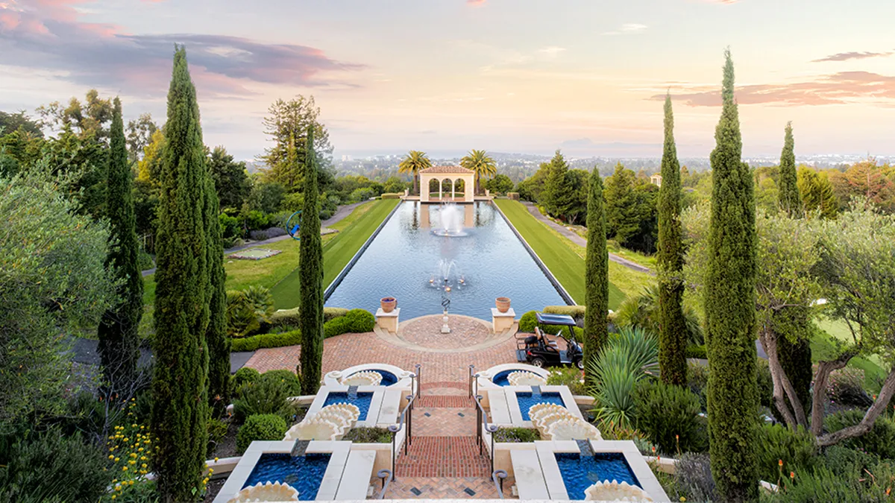
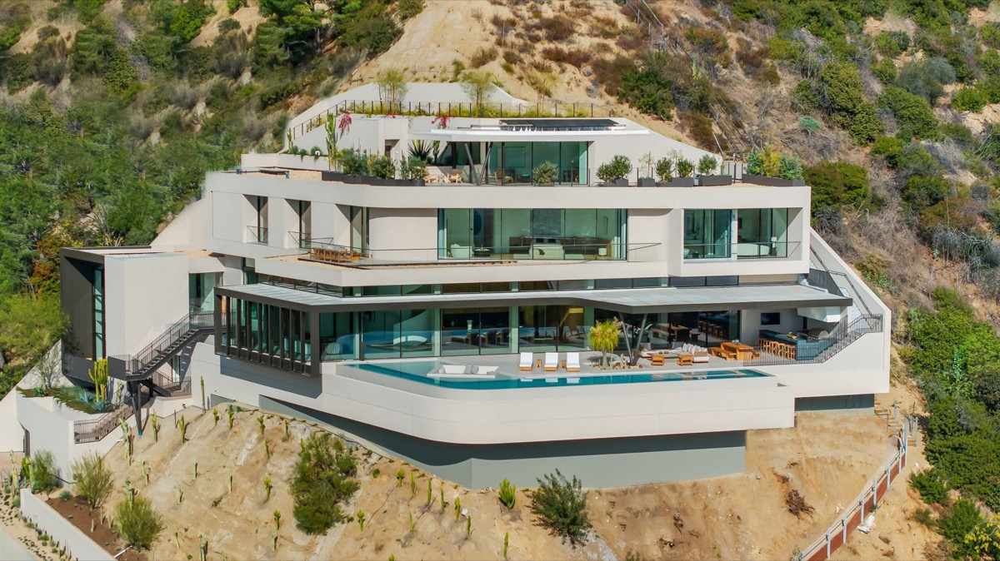
IPO制富：OpenAI+Anthropic两家IPO预计制造约12,000个新百万富翁。Anthropic的7位联合创始人将成为亿万富翁，约50名早期员工成为亿级富翁，约1,200人成为千万级富翁。
对比：OpenAI 2025年亏损数十亿美元。Anthropic估值近万亿但尚未盈利。财富的来源是估值和资本市场的期望，不是业务利润。
这条链的每一环都依赖“下一笔钱进来”。同时，54%的非AI公司已经在裁员降薪来资助AI投入，资金的供给侧本身就在收窄。如果IPO市场遇冷、二级市场不接盘、VC回报率不及预期——整条链会从终端开始收缩：先是新招聘冻结，然后薪酬回调，最后估值缩水。
历史对照：2000年互联网泡沫顶峰，dot-com公司用数亿美元办奢华派对、员工豪车遍地——当时这被认为是“新经济的自信”，事后看是经典的顶部信号。
韩国2026年最抢手的相亲对象不是医生、不是律师，是SK海力士员工。SNL Korea讽刺短片：奢侈品店员一看顾客露出海力士标志，脸色瞬间切换成"海力士大人（Lord Hynix）"。员工内部流传社交密码：出去相亲先谦称自己在三星上班，遇到品行好的对象才亮出真实身份。
背后是真实的数字：2025年人均奖金1.4亿韩元（约65万人民币）；2026年预估冲到6-7亿韩元（约280-320万人民币）。SK海力士2026 Q1营业利润率72%——超过同期英伟达(57%)。手握全球61%的HBM市场份额，是NVIDIA H100/H200的独家HBM供应商，订单排到2027年。
财富效应直接外溢到房地产：龙仁市器兴区2026 Q1公寓成交2,470套（同比+118.7%），园区正门50米内楼盘已售罄。沿海力士通勤班车路线形成"班车站点板块"，多个区域房价飙升。过去4个月，约200名三星员工跳槽至海力士。
来源：芯师爷、每经、新浪财经、腾讯新闻 · 2026-05
合肥长鑫存储（CXMT）——中国第一、全球第四的DRAM厂商——员工从9,600人（2023）增至19,300人（2025），厂区周边从农田变成了租房供不应求的繁华商业区。
周边70㎡两室月租约2,000元，90㎡三室近3,000元——比合肥市区四牌楼等核心板块还贵。回迁房租售比7.62%，约13年回本。华侨城空港国际小镇5,000+套中，20%-30%被长鑫员工买走（超千套）。伟星·万科推出"长鑫存储员工现房团购会"，175㎡大户型直减30万。
房产中介原话："长鑫科技一些收入高的员工，买一套三四十万的二手回迁房，半年工资就够了，相当于买辆车。"
来源：红星资本局、每经、腾讯新闻 · 2026-07
AI资本开支的完整流向：$20亿GPU采购 → NVIDIA(25%毛利进股东口袋) → 台积电(30%代工费) → 海力士/三星/美光(15%内存) → 各层员工 → 房贷、车贷、消费、教育 → 餐厅、中介、健身教练、私人服务。
这条链上1,500-2,000万人直接或间接依赖AI资本开支的持续流动。他们的车贷、房贷、子女教育、餐厅老板的店租——全部建立在"CAPEX会继续"的假设上。
上行时，1美元资本开支创造2-3美元GDP。断流时，同样的乘数反向运转：CAPEX砍半 → NVIDIA停招、奖金减半 → 台积电推迟新厂 → 海力士工人加班费消失 → 龙仁房价回调 → 长鑫周边楼盘滞销 → 餐厅关店、中介失业 → 消费再收缩。
从Sam Altman的$1.24亿豪宅到合肥长鑫周边的¥2,000月租——同一条河的上游和下游。渗透得越深，反转时枯萎得越广。
来源：逻辑推导，基于资本狂潮终局推演的乘数效应分析
4四大厂的钱够花吗？不够了怎么办？
- 四大厂年度CAPEX合计$710B，花钱速度已超过赚钱速度——Amazon已经FCF转负。
- 从市场流动性注入方（回购）变成抽取方（增发+发债）——Alphabet一家增发$900亿，打破全球企业融资纪录。
- 衔尾蛇循环已形成：AI需求→加码CAPEX→钱不够→增发借债→抽走流动性→支撑估值的基础被侵蚀。
| 公司 | 一年赚的 | 当前花钱速度 | 全年计划花 | 账上现金 | 总欠款 |
|---|---|---|---|---|---|
| Alphabet | $174B | $143B | $185B | $127B | $78B |
| Amazon | $148B | $177B 已超 | $200B | $143B | $131B |
| Microsoft | $187B | $128B | $190B | $78B | $40B |
| Meta | $129B | $76B | $135B | $81B | $59B |
| 公司 | FCF 2024 | FCF 2025 | FCF 2026 | 新增融资 |
|---|---|---|---|---|
| Alphabet | $72B | $64B | → 0 | $90B增发 + $25B债 |
| Amazon | $33B | $7.7B | -$2.5B | $15B债 |
| Meta | $52B | $44B | → 0 | $55B债 (总$84B +190%) |
| Microsoft | $74B | $73B | 预计Q4转负 | — |
| 公司 | 融资规模 | 当前市值 | 较峰值 |
|---|---|---|---|
| SpaceX Nasdaq 2026.6 | $75B IPO | $1.43T | -29% |
| Cerebras Nasdaq 2026.5 | $5.5B IPO | ~$55B | -42% |
| OpenAI S-1已递交 | $122B 私募 | $852B | — |
| 长鑫科技 科创板 2026.7 | ¥295亿 | ¥3.8万亿 | -9% |
| 智谱/MiniMax/壁仞 港交所 | HK$615亿 | 较峰值普遍腰斩 | -33%~-77% |
2025-2026年中国大厂AI CAPEX（人民币）：
字节跳动：2025年超1,500亿，2026年上修至2,000亿（+25%），净利润因此暴跌70%。
阿里巴巴：三年规划3,800亿+，2026财年1,260亿，全年自由现金流净流出466亿。
腾讯：2025年792亿（+3%），相对克制，利润仍增17%。
百度：约400亿，含自产昆仑芯。
关键区别：美国大厂用自有现金流+债务融资，中国大厂主要用自有现金流——但字节和阿里已经"花钱>赚钱"。
来源：雪球、钛媒体、财联社 · 2025-2026
5英伟达值不值得买？
- 估值隐含两个假设——垄断地位持续、高毛利率持续——中国因素正在同时挑战这两个假设。
- 最大客户（Google/Amazon/Microsoft/Meta）同时在自研替代芯片，从内部反噬。
- 重要不等于赚钱。利润来自不可替代和议价权，三个方向同时侵蚀。
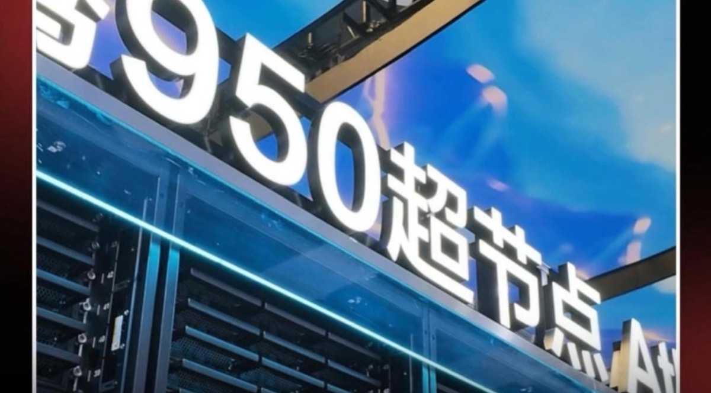
• CUDA护城河被攻破：MUSIFY工具实现 >90% 语法兼容，华为昇腾950PR推理性能达H20的 2.8倍
• 客户在找替代：Coinbase AI支出从$4,811砍至$544/月；Airbnb客服用Qwen；Cursor底座=Kimi
• 毛利回归已有路径：场景一(2026-27) 75%→65-68%，场景二(2027-28) →60-65%，场景三(2029+) →45-50%
历史规律：Intel x86垄断期毛利60%+→今天~45%；Cisco 2000年毛利65%→泡沫后承压。伟大的公司，也经不起任何价格。
华为昇腾910系列2025年出货超70万片，占国内AI芯片市场75%+份额。910C性能接近NVIDIA H100（FP16峰值800 TFLOP/s），但：
即使满产，华为也只能覆盖中国年需求（100-150万片）的40%-60%。国产HBM2e带宽仅达国际水平65%，成本高40%。软件生态面临死亡循环：开发者少→框架优化慢→性能差→用户流失，国产社区月活不到NVIDIA的5%。
中国客户自研芯片不是"选择"，是被制裁逼的——这与NVIDIA客户（Google TPU、Amazon Trainium）主动分散供应商的逻辑完全不同。
来源：瑞穗证券、虎嗅、IT之家 · 2025-2026
6美国大模型公司面临什么处境？
- 供给侧：DeepSeek价格低34倍，美国模型份额一年腰斩。
- 需求侧：95%试点零P&L影响，74%企业已回退AI agent，25%预算推迟到2027。
- 纯AI公司估值建立在"增长叙事持续成立"上——当两端同时挤压，重定价风险上升。
理解大模型公司的处境，先要理解它们卖的是什么。
用户买AI，买的是智力——能写代码、审合同、做分析的通用认知能力。所有AI任务底层都是同一件事：接收token，生成token。就像电用kWh卖，AI用token卖。
这个定价卡就是大模型公司的全部生意：花钱买GPU产Token，按$/Mtoken卖出去。DeepSeek的价格是OpenAI的1/60——这不是折扣，是对整个行业定价权的根本性冲击。理解了这一点，才能理解为什么下面的"两端挤压"如此致命。
来源：供需推导链 S1-S2（已分享·第2讲），API定价页 2026-07核验
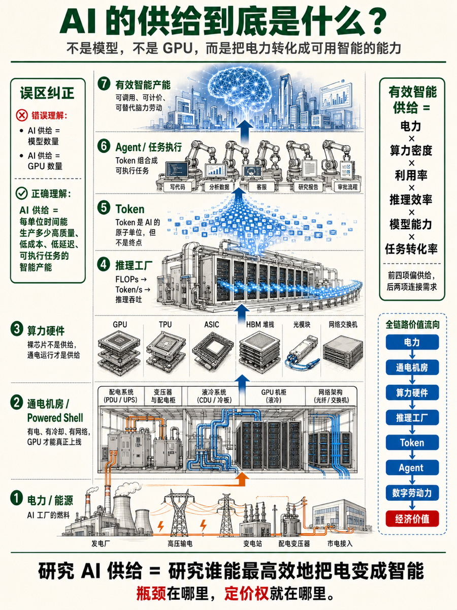
OpenRouter美国模型份额一年从70%跌至30%
DeepSeek token份额17.6%，超Google+OpenAI之和
更多需求 ≠ 更多收入——价格在崩
25%预算已推迟到2027年
95%AI试点零P&L影响（MIT）
74%企业已回退AI agent（Sinch）
CFO开始要求"每个token的产出价值"
中国大模型API定价三级分化（2026年）：
底价：DeepSeek-V3.2 输出¥2.9/百万token，缓存命中低至¥0.19
中档：豆包Seed-2.0-pro、文心4.5 ¥16/百万token
高端：Kimi k2-turbo ¥58/百万token（缓存命中¥1）
DeepSeek V3的超低定价迫使整个行业跟进免费版或大幅降价。性价比排名：豆包 > DeepSeek > 通义千问 ≈ 智谱 > 文心一言。
意味着：中国市场已经证明"模型层卖不出高价"这个判断是对的——价格战的终局就是趋向算力成本。
来源：知乎、CSDN、TrakToken · 2026
7AI的利润最终会流向哪里？
- AI利润正从芯片层向基建和应用层迁移——每轮技术周期都是这个规律。
- 应用层利润占比仅3%→7%（vs 成熟期70%），空间巨大——但"脚手架型"应用会被模型进化替代。
- 如果想抓住下一波机会，要在基建和应用层里找，不是继续追芯片。
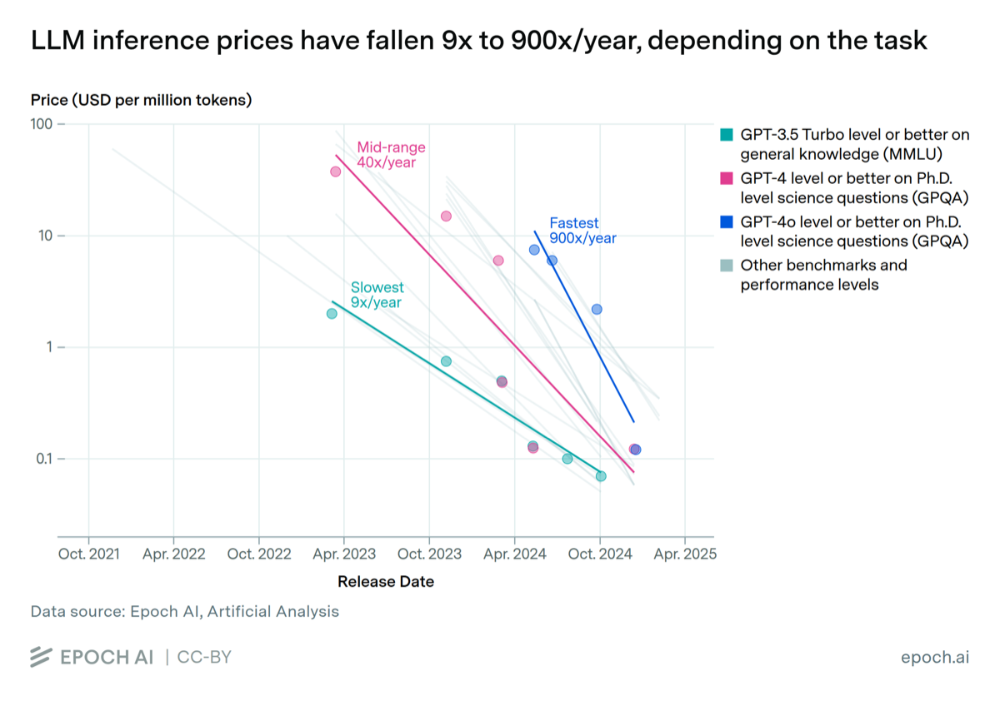
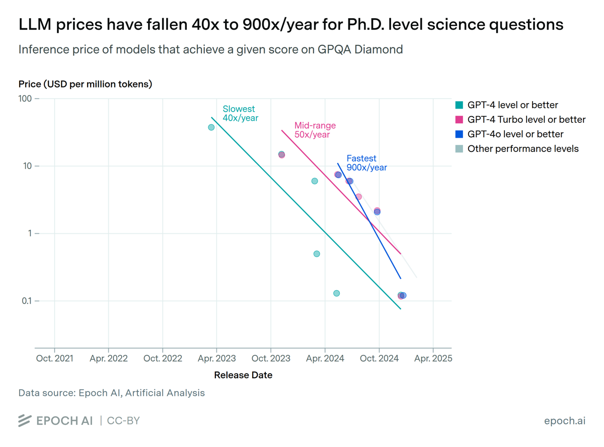
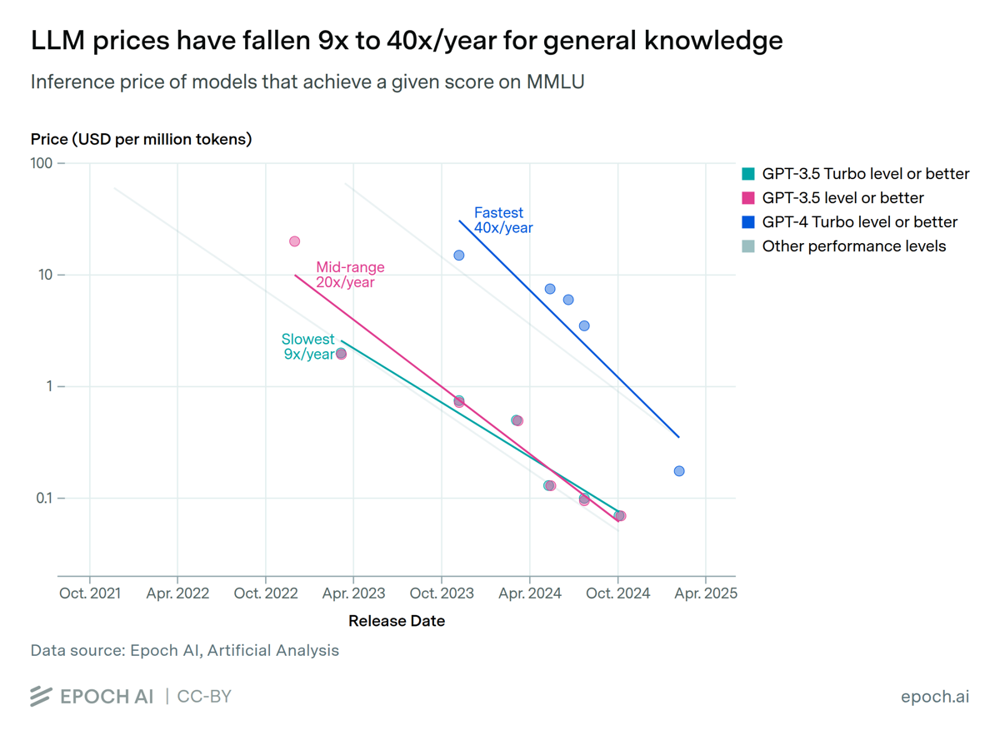
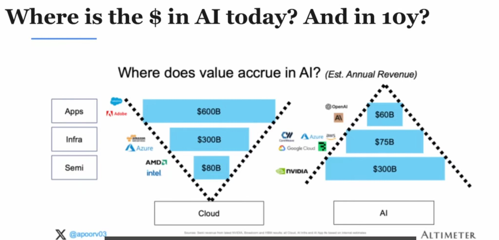
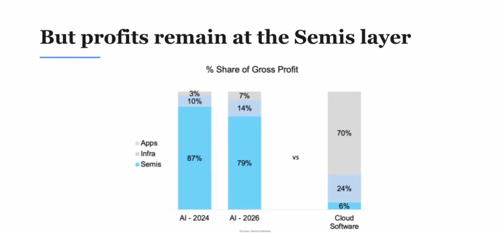
不是过渡的：专有数据、工作流嵌入、合规责任承担、客户关系——物理层和制度层不因模型进化而消失。API切换成本低是模型公司最大弱点，真正的护城河 = 不可替代性 × 议价权。
美国AI利润集中在硬件层（NVIDIA），中国因为芯片被卡，利润路径可能完全不同：
硬件层：华为昇腾虽占75%市场但性能受限，利润空间被制裁压缩。
模型层：百模大战已淘汰至20余家，价格战打到地板。
应用层：豆包（字节）、Kimi（月之暗面）、通义（阿里）——C端订阅（豆包标准版¥68/月）可能是中国AI最先实现正向利润的层。
中国AI利润迁移不是"从硬件到应用"的渐进过程，而是因为硬件被堵，直接从应用层开始。
来源：东方财富、36氪 · 2026
8看好AI方向，就应该买AI股票吗？
- 技术方向成立、公司最终活下来、现在的价格值得买——是三件不同的事。
- 泡沫后的赢家往往不是泡沫中的宠儿——Google不是泡沫宠儿，而是从废墟中崛起。
- 幸存者唯一共同点：泡沫期建的资产，泡沫破后仍有人愿意付钱用。
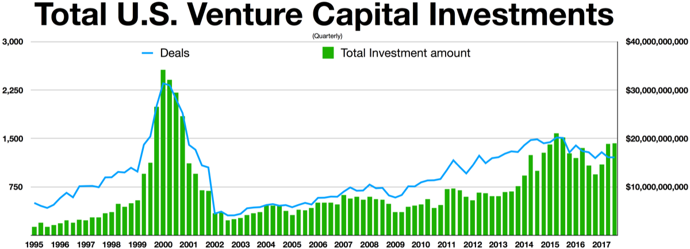
商汤科技（港股00020）：2026上半年首次实现盈利（5-7亿元），此前连续亏损。生成式AI收入占比升至77%。市值约975亿港元。
寒武纪（688256）：2025前三季度营收46亿（+2386%），净利润16亿。股价1,247元，市值5,220亿元。高盛目标价2,104元（+60%）。
两家公司方向都"对了"——AI确实在起飞。但商汤在AI起飞的过程中差点死掉，寒武纪的估值即使按高盛最乐观预测也是上百倍PE。这恰好证明：方向对、公司活下来、估值合理，是三件不同的事。
来源：雪球、证券时报、高盛研报 · 2025-2026
9看对了AI的方向，就应该现在投吗？
- 每轮技术革命，看对方向的人远多于赚到钱的人。差别在时机和价格，不在认知。
- 当一个趋势被广泛认知，它大概率已经被定价——“大家都知道利润往应用层走”本身就意味着这个认知的投资价值在消失。
- 判断标准不是“这个方向对不对”，而是“当前价格有没有把正确的方向算进去了”。
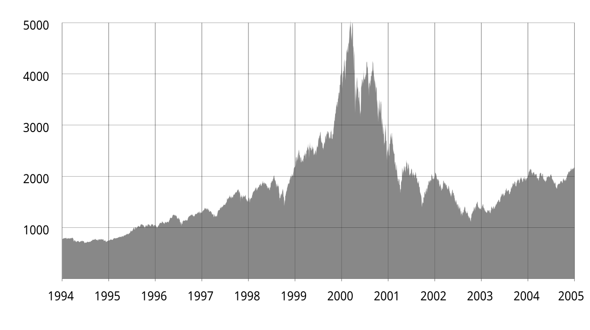
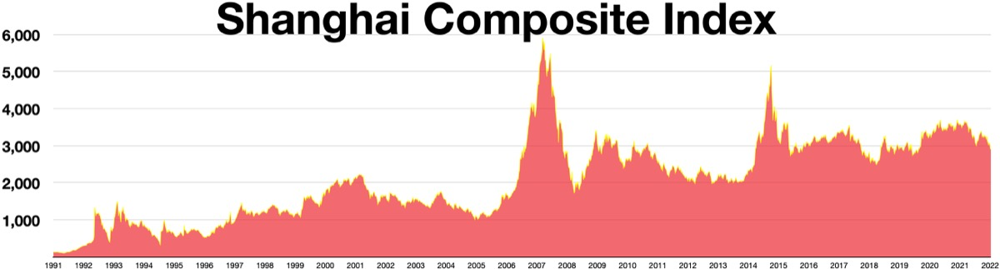
回到$106：2009年底，整整10年。
Amazon确实是电商的最终赢家——但1999年的买家必须抗过10年水下才能解套。方向完全正确，时机让你多付了一个十年。
回到$80：2025年12月，耗时25年8个月。
“互联网需要路由器”的判断完全正确，Cisco至今仍是网络基础设施龙头。但股价回本时，通胀已吃掉80-90%购买力。实际回报仍在水面之下。
Altimeter的那张图在每个投资群里传过一遍。每个分析师都在说“下一个机会在应用层”。当一个认知变成共识，它就已经进入了资产价格——你看到的那个“机会”，市场早已定价完毕。
真正能赚到超额回报的，不是“正确但已知的东西”，而是“正确但别人还没看到的东西”。这就是为什么认知对了也可以亏钱——你不是在和事实竞争，你是在和其他所有持有同一认知的人竞争。
2015年6月创业板指4038点 → 2018年10月1185点（跌71%）→ 2021年3月才回到3500点附近。从2015年看，"移动互联网改变中国"这个方向100%正确——但在最高点买入的投资者等了近6年才回本。
A股AI板块正在复现同样的模式：方向正确，但估值（科创板80-100x PE）已经透支了数年增长预期。如果出现类似2015年的回调，即使AI最终成功，中间的回撤足以让大多数投资者放弃。
来源：东方财富 · 历史数据
10技术革命来了，为什么大多数企业还没变？
- 技术可以快速迭代，但组织、流程、法规和习惯不会同步变——这段时间差就是预期和现实脱钩的窗口。
- 历史上每次革命，金融峰值都领先技术峰值15-35年。泡沫破裂不等于革命失败。
- 当前直接证据：95%企业AI试点无可衡量P&L影响，48%称ROI是"massive disappointment"。
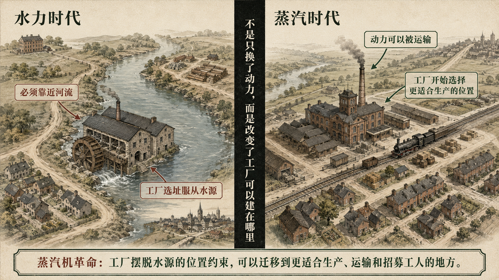
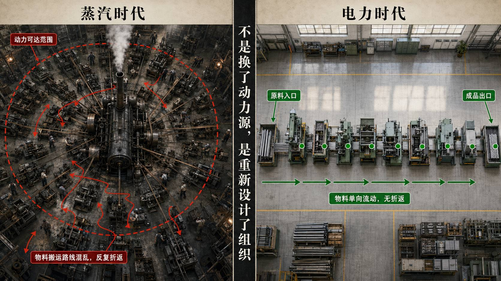
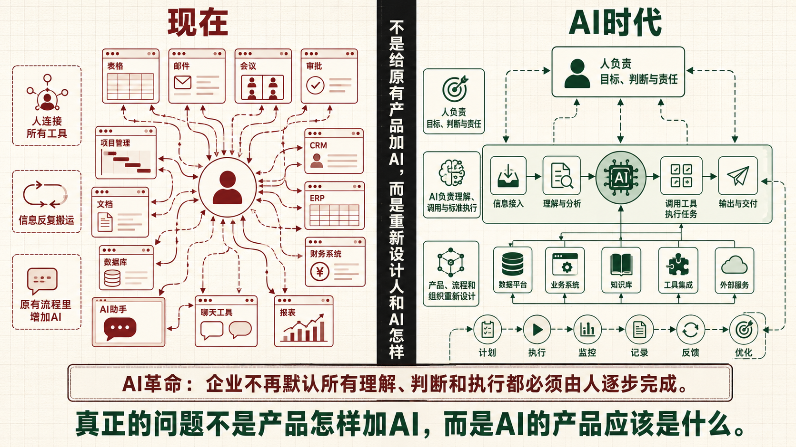
2026年中国企业数字化转型指数59分（满分100），较上年+10分——是历年最大增幅，但绝对水平仍低。
超54%的企业没有设立专门数字化部门，近60%没有制定清晰转型战略。"95%的AI投资未能兑现价值"——落地场景停留在知识库问答和数据分析，难以触及核心业务。
技术快、组织慢的现象在中国更极端：模型能力已经接近美国，但企业吸收能力可能落后更多。这个时间差在中国更大。
来源：埃森哲《2026中国企业数字化转型指数》、极客时间
11乐观写进了合同和贷款，会怎样？
- 资产在贬值，债务不会。GPU会计折旧5-6年，经济寿命2-3年——行业折旧低估约$1,760亿。
- NVIDIA为OpenAI担保$2,500亿融资——卖设备的人给买设备的人担保贷款。研究站能钉死的正例是2000年Lucent/Cisco；铁路和汽车轮是近亲，运河和钢铁电力这一页没有钉子。
- 机制已可见，但不等于马上违约——需同时看现金流、客户质量和再融资能力。
关键细节：$2,500亿担保覆盖数据中心租约和债务融资；NVIDIA另外还在讨论为OpenAI最高 $3,500亿 的芯片采购提供融资。OpenAI没有投资级信用评级——没有NVIDIA担保，这笔贷款无法成立。
研究站按佩雷斯五轮（运河 / 铁路 / 钢铁电力 / 汽车 / 信息）把融资结构铺过一遍。Seller出钱让买方继续买自己的货，合同意义上的正例只有信息轮。另外两轮是近亲：卖方或发起方先给买方造购买力，再把这笔购买当成真实需求。
2008那一层，研究站拿来对照的是CoreWeave「买卡-抵押-再买」，不是NVIDIA的卖方融资。两件事不要并成一句。
全国近300个智算中心项目覆盖29个省份，2025年Q1仅128个项目合计总投资超4,300亿元。但GPU平均利用率不足30%，部分企业级中心低于10%。
60%+的新项目由地方政府/国资平台主导——算力正在被"地产化"。通用算力过剩而智能算力短缺、西部过剩而东部短缺，结构性错配严重。
中国版"乐观写进合同"：地方政府用基建思路投算力，建起来了但没有足够的用户。债务是刚性的，利用率是弹性的。
来源：虎嗅、腾讯新闻、新华网、中国信通院 · 2025-2026
12从GPU到可用算力，中间断在哪？铺路的人能赚到钱吗？
- AI供给是一条链，有效供给取最小值——GPU到了但电没通，等于没供给。最卡的一段：电力（7年+）和变压器（160周+）。
- 基础设施建设者不一定是赢家——光纤泡沫$5,000亿铺设，利用率仅2.7%，建设者破产，但廉价带宽养出YouTube/Netflix/AWS。
- AI的资本预付倍数7-9x（互联网泡沫1.7x），但大厂用现金流融资，系统性风险更低。
中国AI算力国产化率已超40%（2025年），预计2026年超90%。但"最后一公里"的瓶颈更多：
国产HBM2e带宽仅国际水平65%，成本高40%。软件生态月活开发者不到NVIDIA的5%。当前务实策略："训练靠进口GPU（如合规）+ 推理国产化 + 统一权重格式"。
美国的"最后一公里"是铺路人（CoreWeave）可能破产；中国的"最后一公里"是芯片造出来了，但软件栈跟不上，用起来效率打折。
来源：IT之家、OpenAxo、黑豹科技 · 2026
13AI算力真的供不应求吗？
- 供需可被主动调节：供给侧降低计算量释放产能，需求侧切换模型。
- 如果真的供不应求，不会出现连续降价和产能重置。
- 短缺会通过价格、体验和替代模型被消化，不构成长期瓶颈。
需求侧：Codex周活用户2月<100万 → 6月初500万 → 7月12日GPT-5.6上线3天后800万 → 8月1,500万+。5个月翻15倍，知识工作者占比20%且增速是开发者的3倍。
供给侧反应：GPT-5.6 Sol比前代模型消耗更多资源（更长任务、更多tool calls、更复杂工作流）。用户在峰值时段看到"Selected model is at capacity"错误，被迫降级到旧模型继续工作。Pro用户在社区反映额度明显缩水。
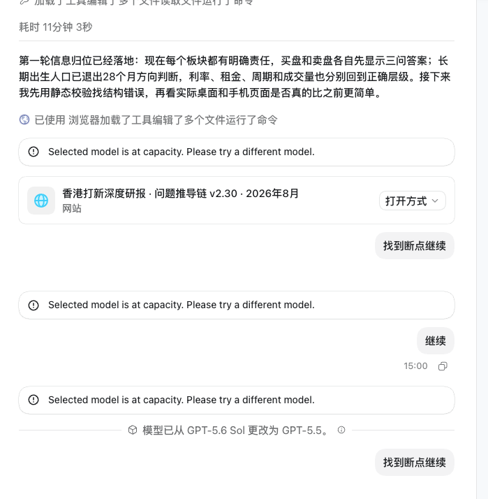
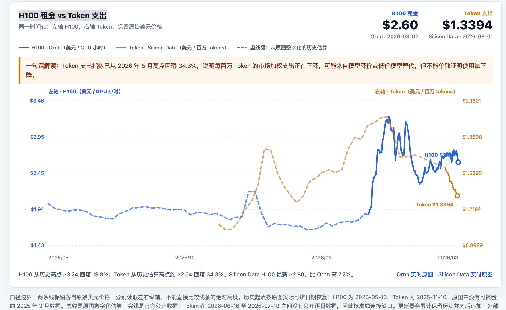
美国全面封堵中国AI算力获取路径：2025年5月将"AI模型训练行为"纳入出口管制，限制从实体硬件延伸到云服务、远程访问。此前中国企业通过马来西亚子公司采购Blackwell芯片的漏洞已被堵上。
中国年需AI芯片100-150万片，华为满产仅能覆盖40-60%。缺口是结构性的、外部强加的——这与美国"供需在同时变化、动态平衡"的局面本质不同。
这意味着中国AI的"算力不够"和美国AI的"算力紧张"是两件完全不同的事。前者是制裁造成的硬约束，后者是投资周期的软约束。
来源：中伦律师事务所、汉坤律师事务所、搜狐 · 2025-2026
14中国模型会不会引发全球价格战？
- 中国模型不需要"赢"，只需提供公开比价对象——能力够用 + 价格低两个数量级 = 高价模型必须持续证明溢价。
- 芯片（7nm够用）、模型（开源追平）、电力（量级优势）三条线同时构成压力。
- 市场份额已翻转：OpenRouter美国模型份额一年从70%跌至30%。
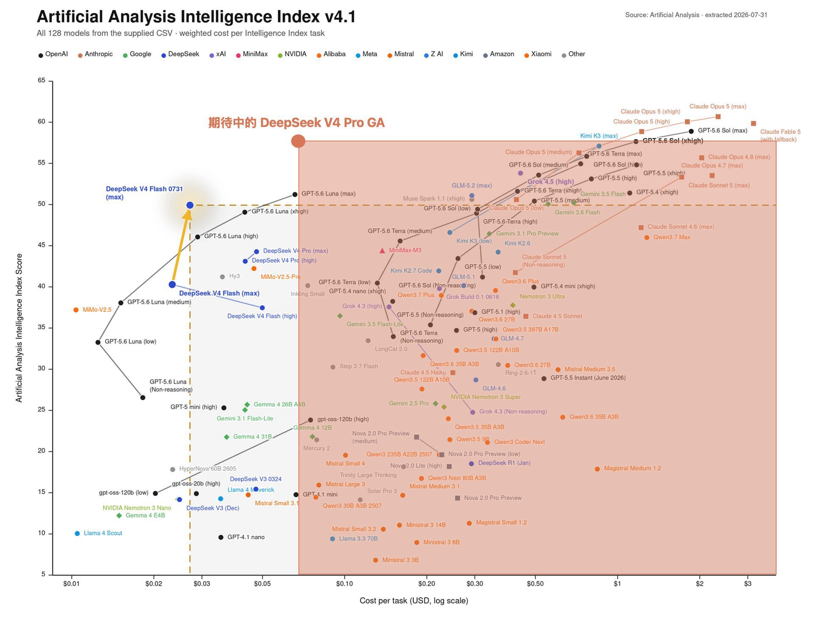
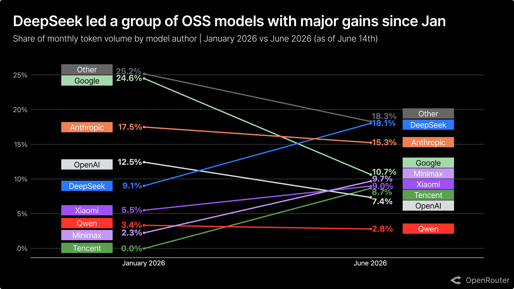
2024年的"百模大战"已结束淘汰赛。通用基础模型竞争者从100+缩减至约20家，真正稳坐牌桌的只有百度、字节、阿里等大厂。
估值超200亿元的5家创业公司中：百川转向行业大模型，月之暗面和MiniMax转向C端产品，只有智谱和阶跃星辰仍在冲AGI。2026年1月智谱和MiniMax在港交所上市。
价格战加速淘汰：DeepSeek V3的超低定价迫使全行业跟进，模型层利润空间被彻底压缩。中国市场率先验证了"智能达到下限后价格战不可避免"这个判断。
来源：21世纪经济报道、新华网、东方财富 · 2025-2026
15Token成本还能降多少？
- Token成本结构性下降，四股力量同向推动：硬件迭代、模型蒸馏、推理优化、竞争压力。
- 终局趋向电力成本——谁的电便宜、谁离电源近，谁的Token就便宜（算电协同）。
- 降价没有减少需求，反而扩大了需求：成本降99%，企业AI总支出增320%。
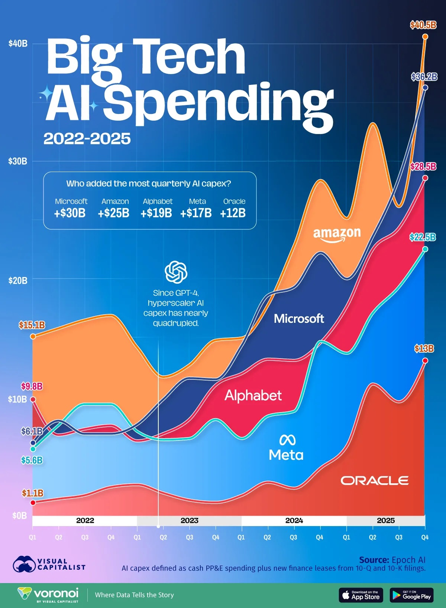
DeepSeek-V3.2输出价格¥2.9/百万token（约$0.4），缓存命中低至¥0.19——相当于GPT-4o价格的不到1/10。
中国市场已经证明Token终局趋向电力+算力成本。在中国，这个终局来得更快，因为：竞争者多（20+家），价格战更激烈，且DeepSeek用更少的算力达到了接近的性能。
来源：TrakToken、知乎 · 2026
16泡沫破了以后，什么时候该入场？
- 每次泡沫破裂，技术都没有死——铁路股-66%但运量增10x，NASDAQ -78%但用户翻倍。
- 当前价格和盈利同时处于历史极端（百年仅三次），"双杀"风险最大。
- 更可能是局部挤压（估值压缩、个股暴跌、创业公司倒闭），而非全面崩盘。入场机会是"持续分化中选对标的"。

市场等于同时押注了两件事："企业现在很赚钱" + "以后还会继续高速赚钱"。
但市场原来期待它赚 130（不及预期）
同时投资者不再愿给 30x 估值，只愿给 20x（估值压缩）
预期股价 30×130 = 3,900 → 实际 20×110 = 2,200，跌 44%
最危险的不是企业不赚钱，而是企业已经很赚钱，股价还提前计入了更完美的未来。
预期本身就是缓冲：2000年几乎无人预测泡沫破裂，2008年主流认为"房价不会全国性下跌"。出乎预料才有刚性脆弱。而今天54%基金经理已经认为AI股有泡沫——当大家都在防范一个风险时，它最不可能以最猛烈的方式兑现。
底层资产有真实现金流：Mag 7合计年经营现金流超$6,000亿，即使AI投资回报不及预期，核心业务（搜索、广告、云、电商）仍在产生利润。这不是1999年靠发股续命的dot-com，而是有真利润的公司在做高风险投资。
结论：更可能的情形是局部挤压（估值压缩、个股暴跌、创业公司倒闭），而非2000/2008式的全面崩盘。对投资者而言，这意味着机会窗口可能不是"一次性暴跌后抄底"，而是"持续分化中选对标的"。
恒生科技指数从2025年10月高点已回调24%+，跑输全球主要科技指数——主因是指数"AI含量"偏低（可选消费占比43%）。但随着MiniMax、智谱等AI公司被纳入，指数结构正在修正。
如果美国AI泡沫破裂，中国AI资产可能提供部分对冲：估值更低（恒生科技PE约13x vs 纳指Mega7约23x），且中国AI受益逻辑不同（应用层先行，而非硬件层驱动）。
但风险在于：如果全球AI叙事破裂，中国AI资产很难独善其身——2000年科网泡沫破裂时，全球科技股同步下跌。
来源：新华网、中信建投 · 2025-2026
17DeepSeek凭什么值得关注？
- 天时：全球AI趋势确定 + 中美产业变革 + 国家潜在扶持，三重顺风同时吹。
- 地利：KV缓存压缩70倍、并发48倍；估值$500亿 vs OpenAI $3000亿+，份额已反超。
- 人和：不追求每个环节的利润最大化，以换取做成更大目标的概率最大化——说到做到。
每一次技术革命，金融崩溃都没有杀死技术本身。铁路股-66%但运量增10x，NASDAQ -78%但互联网用户翻倍。AI能力在加速（板块1），成本在坍缩（板块3），需求波动前进但长期增长（板块6）。泡沫破裂是金融事件，不是技术终结。
二、中美AI产业变革
美国纯AI公司正被两端挤压（板块11），重定价风险上升。DeepSeek站在这个变革的受益侧：它是挤压者，不是被挤压者。美国模型份额一年从70%跌至30%，格局已在重写。
三、国家潜在扶持
DeepSeek是中国自主AI能力的标杆。在芯片禁令持续升级的背景下，国家有战略动力扶持自主大模型企业。首轮融资由国家AI产业投资基金参投，腾讯和宁德时代领投——这不是纯市场行为，是产业+国家意志的组合。梁文锋判断"国产AI芯片替代现在是有个历史性机会的"，DeepSeek既是推动者，也是受益者。
市场证明：
• OpenRouter token份额 17.6%（#1），超Google 12.5% + OpenAI 8.4% 之和
• 美国模型份额一年从70%跌至30%
• Lindy（AI agent平台）全线切换DeepSeek V4，节省数百万美元且性能提升
估值洼地：首轮外部融资 $74亿（腾讯+宁德时代领投），估值 $500亿。OpenAI准备IPO，目标估值 $3000亿-$1万亿。6-20倍的估值差距，但市场份额已经反超。低成本不是定价策略，是技术能力的外溢。
• 梁文锋原话："技术冻结在这里，我们全力卖API把服务做好，也够的。"
• 不烧钱抢C端、不做垂直SaaS、不养庞大销售团队——成本结构天然更轻
• 幻方量化的自有资金支撑，不受外部融资市场情绪影响
• 克制不是软弱，是在危机来临前就已经把负担卸掉了
泡沫破裂时，OpenAI需要向市场解释为什么$3000亿估值合理。DeepSeek只需要继续做研究、卖API、活下去。做纯粹研究和商业的公司，在危机中反而更抗压。
• 产品短板暴露——梁文锋自己承认"产品很多都不完善"。大模型能力趋同后，产品、渠道和客户服务可能成为决定性短板
• 芯片禁令卡脖子——效率再高也跑在硬件上。如果国产芯片产能和代际差距无法收窄，算力天花板会限制模型规模
• 地缘风险溢价——中美关系恶化可能导致中概资产系统性折价，与公司基本面无关
DeepSeek V4（2026年4月）：参数1.6万亿，百万token上下文标配，全面适配华为昇腾950PR——首次从CUDA转向CANN框架。百万上下文下每token算力消耗仅为V3.2的27%。
首轮融资500亿元（中国AI史上最大单笔）：梁文锋个人出资200亿，国家大基金领投，腾讯60亿拿2%股份。估值从100亿美元迅速升至200-300亿美元。
V4.1（6月发布）首次加入多模态和MCP协议。API价格再降至原定价1/4——创全球大模型价格新低。
DeepSeek的存在本身就是"不依赖增长叙事存活"的典型——用更少资源做到接近性能，是泡沫破裂后最抗压的模式。
来源：钛媒体、36氪、知乎 · 2026
这些论文不是随机堆技术。一直在拆同一个问题：模型容量、长上下文显存、集群通信、推理能力、百万上下文计算、固定知识和串行生成，各贵在哪，就各砍一刀。
最鲜明的思路不是单纯把模型做大，而是把参数容量、激活计算、KV显存、通信、存储和推理速度分别拆开，然后逐项降低边际成本。
| 时间 | 论文 | 解决的问题 | 人话 |
|---|---|---|---|
| 2010 | 《基于低成本PTZ摄像机的目标跟踪算法研究》 | 硕士学位论文，机器视觉与低成本硬件 | 用便宜摄像头把目标跟着拍。目前只能由公开报道交叉确认，未找到可访问的浙大馆藏记录 |
| 2024-01-05 | DeepSeek LLM | 研究scaling law、数据和训练配比，建立7B/67B基础模型 | 先摸清规模怎么涨、数据怎么配，把底座立起来 |
| 2024-01-11 | DeepSeekMoE | 提出「细粒度专家＋共享专家」，让模型参数做大，但每个token只计算一小部分 | 模型可以很大，每个字只叫醒一小撮专家 |
| 2024-01-25 | DeepSeek-Coder | 2万亿token代码训练、项目级代码和代码补全 | 用海量代码，教会写程序、补全、看整个项目 |
| 2024-05-07 | DeepSeek-V2 | 把MLA与DeepSeekMoE合并；论文报告KV Cache减少93.3%，支持128K | 记忆压缩和专家分工合在一起，长文显存砍掉九成三 |
| 2024-06-17 | DeepSeek-Coder-V2 | 在V2上继续训练6万亿token，扩展到338种编程语言和128K | 在V2上再练代码，语言更全，长上下文也能写 |
| 2024-08-26 | Fire-Flyer AI-HPC | 研究一万张PCIe A100的软硬件协同，降低集群、通信和存储成本 | 一万张普通卡怎么把集群、通信、硬盘成本压下来 |
| 2024-12-27 | DeepSeek-V3 | 671B总参数、37B激活；整合MLA、MoE、FP8、无辅助损失负载均衡和多token预测 | 把前面几招装进大模型：总参很大，每次只激活一小部分 |
| 2025-01-22 | DeepSeek-R1 | R1-Zero用纯强化学习激发推理；最终R1再加入冷启动、多阶段训练和蒸馏 | 先让模型自己用强化学习想推理，再补冷启动和蒸馏 |
| 2025-02-16 | Native Sparse Attention | 让长上下文只关注压缩摘要、重要token和局部窗口，并与GPU硬件对齐 | 长文不必句句盯，盯摘要、关键句和眼下这一窗 |
| 2025-05-14 | Insights into DeepSeek-V3 | 系统复盘MLA、MoE、FP8、网络拓扑与芯片之间的协同关系 | 把软件、网络和芯片怎么配合，写成一篇复盘 |
| 2025-12-02 | DeepSeek-V3.2 | 引入DSA稀疏注意力，并扩大推理和Agent强化学习 | 稀疏注意力再进一步，并加大推理和Agent训练 |
| 2025-12-31 | mHC | 改造残差连接，使更复杂的多通道连接在大规模训练中保持稳定 | 改残差连接，让更复杂的通道在大规模训练里别崩 |
| 2026-01-12 | Conditional Memory / Engram | 用O(1)查表保存固定知识：MoE负责「条件计算」，Engram负责「条件记忆」 | 死知识别反复算，查表拿 |
| 2026-04-26 | DeepSeek-V4 | 百万token上下文；混合压缩与稀疏注意力，论文报告KV Cache仅为V3.2的10% | 百万字上下文，缓存大约只要V3.2的一成 |
| 2026-07-06 | DSpark | 用半自回归草稿和动态验证加速生成；论文报告线上速度提高约60%–85% | 先一口气猜好几个字，再批量核对，生成快六到八成 |
V4是4月首次上传、6月正式公告并分配2606编号，所以编号月份与上传时间不同。硕士论文见搜狐交叉报道。完整记录可在 arXiv 作者检索核对。
18Crypto和AI到底是什么关系？
- Crypto可能成为AI Agent的支付结算基础设施——已有$7,300万通过crypto rails结算。
- 需区分两个命题：技术性关联（支付基础设施）有初步数据；投机性共振只是交易机会。
中国对Crypto的态度与美国截然相反：2021年全面禁止加密货币交易和挖矿。如果AI Agent确实需要原生支付基础设施，中国AI Agent要么走传统支付（支付宝/微信支付），要么面临监管真空。
这创造了一个有趣的分叉：美国AI Agent可能用Crypto解决机器间支付；中国AI Agent更可能走数字人民币+央行数字货币路径。两条路径的效率和灵活性将产生不同的AI Agent生态。
来源：公开信息综合
19FDE是什么？我想先从固定小事试一试
- FDE就是人到现场，把一件天天发生的业务做成有人真在用的系统。和顾问报告、销售演示不是一条路。
- 外面为什么热：模型便宜了，很多试点进不了生产。能接到具体工作上的人，比较缺。
- 我的想法很简单：先做通一件规则清楚、每周都发生的小事。做之前，想听听大家烦的是哪一件。
先把这个词说清楚。后面是外面的例子，最后是我自己的想法。
Forward Deployed Engineer，前置部署工程师。Palantir在2000年代中期为了把软件送进情报和军队现场，发明了这个岗位：工程师人过去，坐在客户旁边写能上线的代码。顾问交报告就走；销售工程师做完演示把接口交给客户。FDE留下，直到那件事有人天天在用。
另一组口径：2025年1月到9月，FDE相关招聘增幅超过800%。Anthropic、Google、Databricks、Stripe和四大咨询也在建同类队伍。
这是招聘广告上的区间，不是到手。买服务和养岗位不是一笔账，但出价本身就能看出缺口有多急。
来源：Colin Jarvis访谈（ZenML转写）；OpenAI官网 2026-05 Deployment Company；The New Stack / Paraform；Glocomms引Indeed；36氪转引豆包/蚂蚁/智谱公开招聘
2023年，摩根士丹利是OpenAI第一个把GPT-4送进生产的企业客户。事情很具体：让全部财富顾问用得上公司自己的投研报告。技术管道6到8周能搭起来；顾问敢天天用，又花了4个月做试点、核对、改评价。
结果：财富顾问采用率98%，研报使用量约3倍。他们也不是先上一个「全能助手」，是先把一件高风险、天天发生的事做通。
来源：OpenAI FDE负责人Colin Jarvis访谈，ZenML LLMOps案例转写
OpenAI FDE在一家欧洲半导体公司现场待了数周，先画价值链，再选验证环节——工程师把70%-80%时间花在修bug和保兼容，不是写新功能。他们做了约10个用例，早期部门效率大约20%-30%，目标看到50%。
入口也是固定小事：每天早上过夜测试甩出上百个bug。第一版只调查、写工单；信任起来之后，才尝试自动修并提PR。
来源：同上，Jarvis访谈
Klarna客服侧有400多条政策，一条条手写提示词撑不住。FDE把指令和工具参数化，每条意图配评价集。这套做法先变成内部框架Swarm，再变成后来的Agent SDK / Agent Kit。
顺序是反的：先在一个客户身上做通，再抽象成产品。不是先画一个万能平台。
来源：同上，Jarvis访谈；Klarna 2023年客服自动化公开讨论
我搜了一下。国内已经能买到挂着FDE名字的服务，只是很少有人把价目表挂在网上。
有官网、能谈单的：句子互动从2023年起按结果收费，官网上写的是转化和人效真改善了才收钱，场景是AI客服和AI销售；简单角色最快1天，复杂角色大约90天。优码云卖驻场AI工程师，按人月或阶段计费，快速验证写4–8周，完整建设和知识转移写2–4个月，具体报价要谈。盛安德把自己叫AI落地专家，说首次沟通不收费，后面按迭代推进。
大厂这边，人往往包在平台合同里：飞书、钉钉用销售+技术双人组进中大型企业。腾讯研究院那份FDE观察里写，国内大量项目还在十万到百万人民币量级；CodeBuddy/WorkBuddy一类陪跑，头部客户单独付费有听到百万到五百万。这是报告转述，不是价目表。
下面还有一批独立小团队，有人叫土FDE：获客按有效线索、降本按节省人力分成、客服按处理单量，有人举过「处理一单五毛、做不出来不收钱」。跑过几个城市的从业者说，既有几百、几千的电商小单，也有几十万、上百万的企业改造；国内更常见的是只对结果买单。
招一个自己人的地板也能对照：公开招聘里，豆包FDE大约3.5–7万/月、15薪，蚂蚁数科4–6万/月，智谱FDE负责人6–8万/月。买服务和养岗位不是一笔账，但能看出这件事不便宜。
来源：句子互动官网 juzibot.com/fde.html；优码云 umayun.com/solutions/fde；盛安德 shinetechchina.com.cn/fde.shtml；36氪《大厂正在花百万年薪抢人，FDE到底是什么？》《第一批做FDE的人，离高薪差远了》；腾讯研究院《FDE模式行业观察与实践》（学客汇转述）
外面的故事很大：投行、晶圆厂、客服中台。我这边还没想那么远。更想先从身边开始：规则清楚、每周都发生、现在已经有人在手工扛的小事。
我脑子里出现过的，也就是报销和费用核对、对内信息对不上要反复问人、新同事上手最卡的那几步。这些不一定对。你们天天在做的，比我清楚。
不是布置作业。就是想听听，手头有没有一件事，烦到值得试一试。一句话就行：谁在做、多烦、怎样算做对了。
如果方便，可以顺带说这几句，我好判断哪件最小：
1. 每周都发生，还是一年一次
2. 对错现在能不能核对
3. 是不是已经在用表格和聊天硬扛
4. 第一版能不能先只跑通一个环节
我收到后，会先挑最小、最固定的那件试试。选得不准，再一起改。